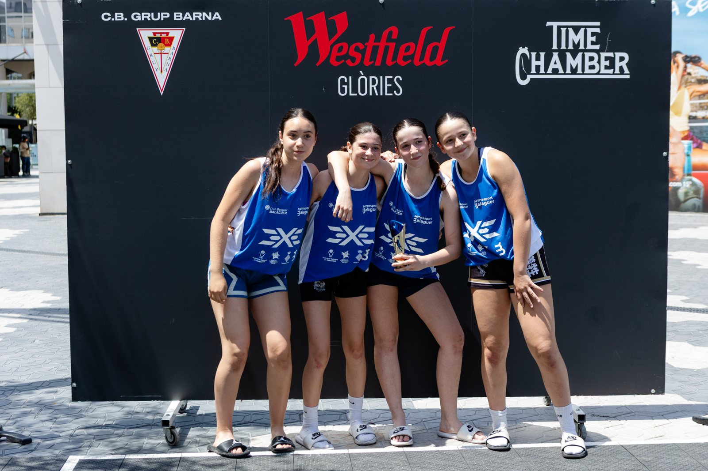
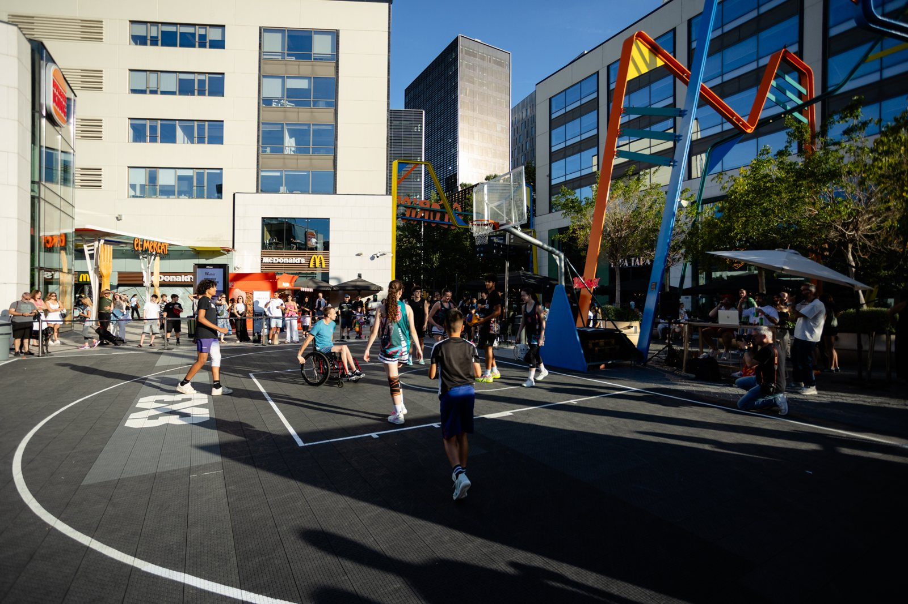
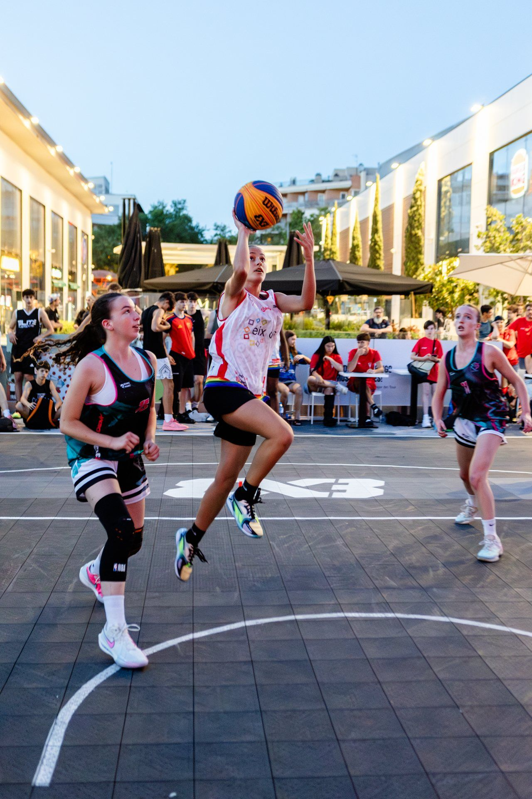
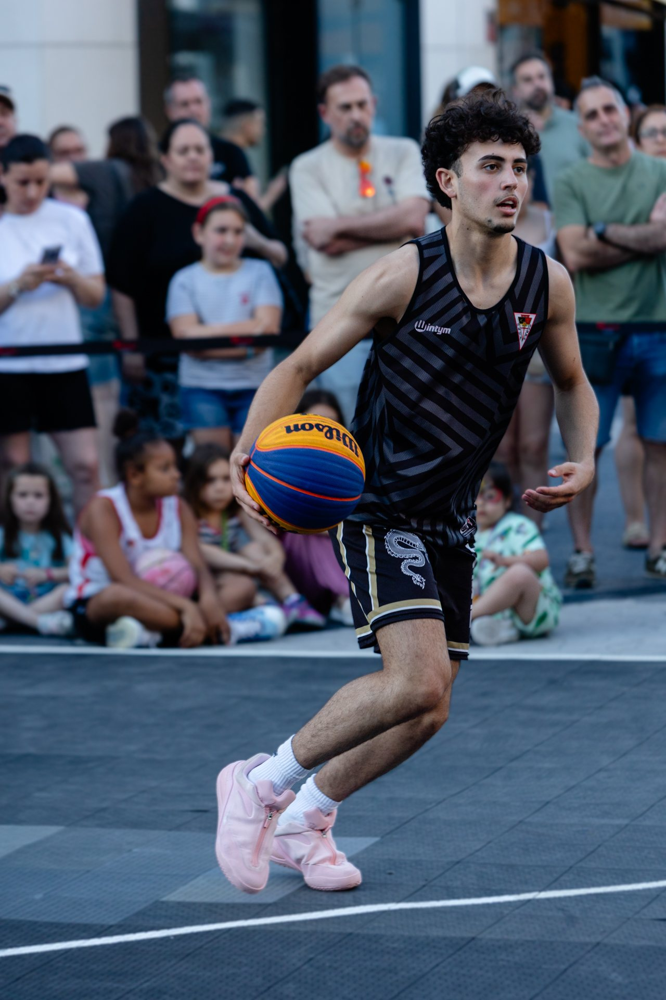

Dossier de patrocinis
El club de bàsquet de barri amb més projecció digital de Barcelona.
Qui som
Fundat el 1965 · Poblenou i el Clot· El club
Un club de barri, amb abast de ciutat
Club de bàsquet de Barcelona arrelat al territori, amb equips masculins i femenins de l'escoleta al sènior. El 2025·26 hem tancat la temporada amb 1.109 publicacions i presència diària a tots els equips.
«Humilitat, esforç i treball en equip per aspirar a tot.» #Barna60anys
Impacte digital
Panell professional · 24 jul 2026
· El que hi ha darrere del logo
Mig milió de visualitzacions cada mes
No és un club que publica de tant en tant: la temporada 2025·26 hem fet 1.109 publicacions i 1.634 històries, i el compte ha arribat a 1,97 milions de comptes.
Una marca que hi entra no compra un logo en una samarreta: entra en el contingut que aquesta gent mira cada setmana.
Dades reals del panell professional de Meta, amb històric complet des de l'1 de setembre de 2023. La temporada 2025·26 es tanca el 26 de juliol de 2026.
Tres temporades seguides creixent
Instagram · publicacions de feed| Temporada | Comptes assolits | Visualitzacions | Likes | Comparticions | Publicacions |
|---|---|---|---|---|---|
| 2023·24 | — | — | 40.289 | 40 | 342 |
| 2024·25 | 1.476.756 | 4.857.268 | 69.962 | 1.016 | 542 |
| 2025·26 | 1.968.729 +33% | 6.435.889 +32% | 85.474 +22% | 3.952 ×3,9 | 1.109 |
El 2023·24 Instagram encara no donava la dada de visualitzacions per a fotos i carrusels, per això aquella temporada només és comparable en likes i volum. A banda del feed, la temporada 2025·26 hi ha 1.634 històries, amb 1,63M de visualitzacions i 1,21M de comptes assolits.
Seguidors al final de cada temporada
El creixement no s'aplana, s'accelera: +900 seguidors una temporada i +1.682 la següent. En dues temporades el club gairebé ha doblat.
Qui ens segueix
Perfil de l'audiència
· A qui arriba la teva marca
Pares i mares del barri
El gruix de qui ens segueix té entre 35 i 54 anys i viu a Barcelona: són les famílies que decideixen la compra, no els jugadors adolescents.
Per a un comerç del Clot o de Sant Martí, això vol dir arribar al seu client real.
Per edat
D'on ens segueixen
El 88,8% de qui ens segueix és d'Espanya. Públic molt local, com correspon a un club de barri. Per gènere: 58,8% homes i 41,2% dones.
On som al rànquing
Clubs formatius i de barri de Catalunya- 1Bàsquet Femení Sant Adrià8.517
- 2Fundació Bàsquet Català7.803
- 3CB Prat7.451
- 4CB Cornellà7.233
- 5CB Granollers6.108
- 6CB Boet Maresme5.946
- 7CB Grup Barna5.382
- 8CE Laietà5.302
- 9SESE5.114
- 10TGN Bàsquet4.850
- 11Força Lleida Base3.864
- 12JAC Sants3.839
- 13CB Roser3.471
- 14CE Pla d'en Boet3.232
- 15UE Horta3.065
- 16Lluïsos de Gràcia2.878
- 17UE Sant Andreu2.122
Seguidors a Instagram, 26 de juliol de 2026. Som el primer club de bàsquet de barri de la ciutat de Barcelona i el setè de Catalunya entre clubs formatius i de barri. No hi comptem els clubs ACB, que juguen en una altra categoria.
Què publiquem, i cada quan
Calendari de publicacions- Calendari — de 3 a 4 cops per setmana: crònica, fotos i reels
- Entrenaments — 2 cops per setmana: la feina que no es veu i tècnica
- Contingut de club — 5 cops per setmana: notícies, fitxatges i renovacions
- Menció de patrocinadors — setmanal, en stories, posts i reels
- Events — campus, torneigs, finals i activacions, quan toca
Xarxa de col·laboracions
La temporada 25·26 hem mencionat o col·laborat amb 197 comptes diferents: comerços del barri, fotografia i premsa local, la Federació Catalana de Bàsquet i altres clubs.
El que més abast fa
Esdeveniment, jugadora destacada i valors de barri. La peça més vista de la temporada arriba a 35,6K visualitzacions, i tres de les cinc primeres són d'equips femenins.
Què hi guanya la teva marca
Proposta de valor
· Al pavelló i al carrer
On acaba el teu logo
Banderoles i cartells a La Nau del Clot, logo a l'equipació de tots els equips federats i presència a entregues de trofeus i finals.
A fora, el barri: acords amb l'Eix del Clot, el Districte de Sant Martí i la Federació d'Entitats Clot-Camp de l'Arpa.
3×3 Barna
Westfield Glòries · esport al carrer
· Esport al carrer
- Tres edicions al centre comercial Westfield Glòries
- Categories femenina, veterans i EQUALS
- Registrat oficialment a la FIBA 3x3
- La peça del torneig és de les més vistes de tot el període


Fotografies del torneig: Foto Jané. Galeria completa a les fotos del 3×3.
Events i activacions
On es pot activar una marcaReconeixement institucional
Generalitat · Ajuntament · Federació
Generalitat de Catalunya
Reunió amb Bernat Álvarez, Conseller d'Esports.

Ajuntament de Barcelona
Únic club de bàsquet finalista del 18è Premi Dona i Esport.
Veure la candidatura →
Federació Catalana de Bàsquet
Equips a totes les lligues federades i col·laboració al Programa BQ.
Qui ja ens acompanya
24 empreses i entitats


 Wilson
Wilson


Totes les fitxes, a Partners i al mapa de partners.
Com pots col·laborar
Quatre maneres d'entrar-hiPresència digital
La manera senzilla de començar.
- Logo a les stories setmanals
- Menció als posts del club
- Presència al mailing de famílies
Digital i pavelló
La marca també es veu als dies de partit.
- Banderola a La Nau del Clot
- Logo a l'equipació
- Dos posts dedicats al mes
Màxima visibilitat
La marca, lligada als events del club.
- Naming d'un event
- Reel dedicat cada mes
- Presència a tot el material
Ho parlem
Col·laboracions en espècie incloses.
- Proposta feta per a la teva empresa
- Activacions conjuntes al barri
- Producte o servei a canvi de visibilitat
Expliqueu-nos què necessiteu i us preparem la proposta amb xifres i preus.
· Fem-ho possible
Parlem-ne
Estem disponibles per estudiar qualsevol proposta de col·laboració o patrocini.